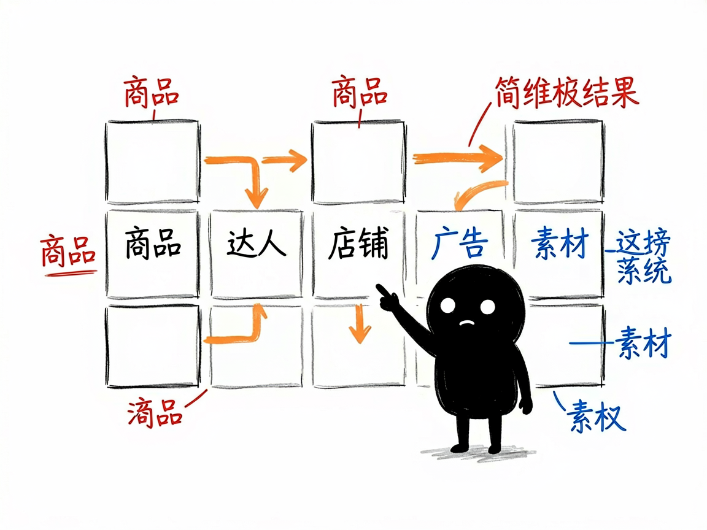

做 TikTok 电商想抄爆款、盯达人？它把榜单数据一键搬下来 —— fastmoss-rpa 介绍
你在做 TikTok 小店（TikTok Shop），想知道最近什么商品突然爆了、哪些达人带货最猛、对手在投什么广告关键词。FastMoss 这个网站能看这些数据，但手动一页页翻、一条条抄进表格，几十页下来人都要麻了。fastmoss-rpa 用一条命令，就把 FastMoss 上 7 大榜单的数据自动抓成表格，还能顺手生成一份带洞察的分析报告。
fastmoss-rpa 就是来解决这件事的。
你给它一个榜单名称加筛选条件（比如"美国站、涨粉榜"），它还你一份 CSV 数据表，以及一份人话版的分析报告。

它到底能做什么
- 抓商品榜（products）：看新品、销量、热推商品，比如美国最近上新的爆品。
- 抓达人榜（creators）：看涨粉、带货、蓝V、热门、黑马等各类达人，比如印尼涨粉最快的带货号。
- 抓店铺榜（shops）：看各站点的销量榜、热推店铺。
- 抓广告趋势（ads）：看正在投的标签、关键词、品类。
- 抓素材榜（creatives）：看近期跑量的视频、音乐、标签。
- 抓直播榜（livestreams）：看 TT 直播、直播爆品、直播带货达人。
- 抓品类大盘（market）：看行业格局、市场总览、日销趋势，支持多国对比。
- 按国家 / 品类 / 时间筛选：比如"美国 + 印度尼西亚 + 泰国"一键多市场抓，自动切分。
一个具体例子
在技能的 scripts 目录里运行，把路径换成你想存的就行：
# 抓美国站达人"涨粉"榜前 5 页
python fastmoss_rpa.py scrape --section creators --ranking fans --pages 5 --out out/fans.csv
# 按国家筛选商品榜
python fastmoss_rpa.py filter --section products --country 美国,印度尼西亚 --pages 3 --out out/by_country.csv
# 把抓到的 CSV 变成分析报告
python fastmoss_rpa.py analyze creators --fans out/fans.csv --out-md report/creators_report.md
--section 选榜单，--ranking 选子榜单（商品榜不用填），--pages 是抓几页，--out 是存哪。

谁适合用
- 做 TikTok Shop 的卖家、选品人员、直播团队。
- 想找爆款、找达人合作、盯对手广告的跨境运营。
- 需要把多国 TikTok 数据做成对比报告的调研者。
一点说明
它不是普通能双击打开的软件，而是一个给 AI 助手用的"技能包"加一套 Python 脚本。它靠 BrowserSkill 这个浏览器自动化工具，驱动你电脑上已经登录 FastMoss 的真实浏览器去抓数据——所以你得先装好 BrowserSkill 插件、用 Chrome/Edge 登录 FastMoss，并确认 bsk status 显示已连接。没登录或没连上浏览器，就抓不到。具体支持的榜单和字段以项目 SKILL.md / references 为准。